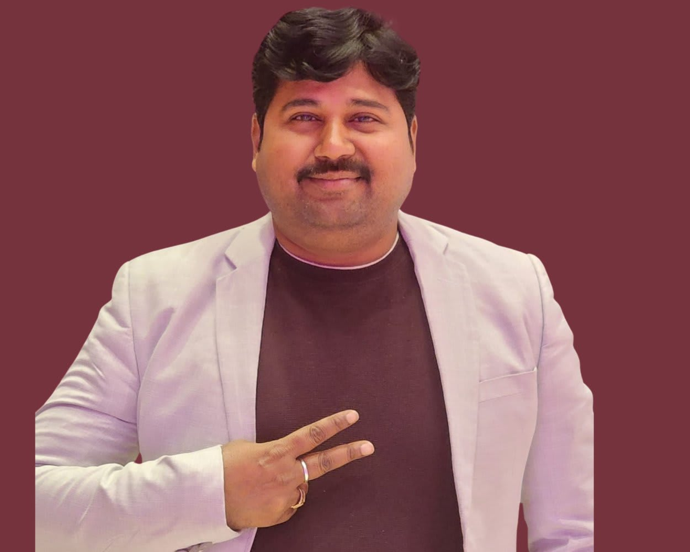

Engineering & Business Leader
Experienced Engineering and Business Leader with expertise in Environment & Planning, Digital Engineering, BIM, GIS, LiDAR, Team Management, International Collaboration, and Business Development. Passionate about innovation, digital transformation, and leadership excellence.
My goal is to create environments where people can grow, perform, and achieve their full potential.
To become a global engineering and business leader who creates meaningful impact through innovation, people development, digital transformation, and sustainable growth.
Leadership Development
Business Strategy
AI & Automation
Reading & Continuous Learning
Team Building
Swedish Language & Culture
Mentoring Future Professionals
Strategic Leadership
People Development
Innovation Management
Digital Transformation
Problem Solving
Team Building & Mentorship
Department Manager – Environment & Planning Division
Team Manager – DSS & ESS
International Collaboration with Sweden and Europe
Business Development & Strategic Growth
Leadership & People Management
BIM, GIS, LiDAR & Digital Engineering
Talent Acquisition & Team Expansion
Process Improvement & Quality Management
AI, Automation & Digital Transformation
Training, Mentoring & Career Development
Team Management
Team Expansion
Employee Development
Performance Management
Strategic Planning
Resource Management
Stakeholder Management
BIM & Scan-to-BIM
GIS & Geospatial Solutions
LiDAR Processing
Mobile Mapping
Digital Twins
Infrastructure Engineering
Point Cloud Management
Business Development
Client Relationship Management
Occupancy Improvement
Cost Optimization
Proposal Management
Global Collaboration
Operational Excellence
To drive innovation, build high-performing teams, and create sustainable engineering solutions through leadership and technology.
Email: Akhil416@gmail.com
Phone: +918800777416
LinkedIn: Akhilesh Kumar
Built and expanded multiple engineering and digital teams.
Successfully recruited and developed high-performing professionals.
Established strong working relationships with Swedish and European teams.
Supported global project delivery and business expansion initiatives.
Promoted AI, automation, and digital workflows.
Improved productivity, efficiency, and quality.
Mentored junior engineers, future leaders, and managers.
Created a positive and collaborative work culture.
I believe that great organizations are built by empowering people, fostering innovation, and creating a culture of continuous learning and collaboration.
Building High-Performance Teams
Driving Business Growth
Digital Innovation
Employee Development
Operational Excellence
"Success is not achieved alone. Great teams, strong relationships, and continuous learning create extraordinary results."
— Akhilesh Kumar
Email : Akhil416@gmail.com
LinkedIn : Akhilesh Kumar.com/in/akhileshkumar